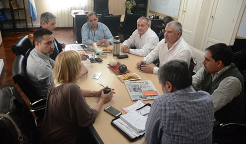

Real Chubut - Agencia de Noticias


Linares reafirmó el compromiso para garantizar espacios de salud que den respuestas efectivas

Así lo expresó el intendente, tras reunirse con el ministro de Salud provincial, Ignacio Hernández, en virtud de aunar criterios para avanzar en el fortalecimiento de las políticas sanitarias que se están llevando adelante en la ciudad. Al respecto, el jefe de la ciudad, explicó que “entre los temas que es necesario que avancemos, uno de los prioritarios es el hospital materno infantil. Entiendo que no va a salir en un año, pero tenemos que comenzar a priorizar un espacio de esta envergadura que de respuestas a la población infantil que es la que más necesita”.
La reunión se llevó a cabo en la intendencia y contó además con la presencia del secretario de Salud, Carlos Catalá, el subsecretario de la misma área, Jorge Espíndola y se plantearon temas vinculados con la necesidad de trabajar mancomunadamente entre Municipio y Provincia.
En ese sentido, el intendente destacó que “le expusimos al ministro todas las acciones que se realizan desde el Municipio y que tienen que ver con respuestas concretas que requiere la ciudad. Por ejemplo, estamos analizando instalar un sistema de emergencias pre hospitalarias para todo el ejido de la ciudad; nos comprometimos a costear los pasajes para que vengan pediatras desde Buenos Aires a hacer atenciones en la ciudad los fines de semana y estamos, en forma constante ayudando, al Hospital Regional”.
“Se arregló el ascensor de este nosocomio porque hace mucho tiempo no funcionaba e hicimos un acuerdo para solventar el mantenimiento del mismo. Así que todo lo que podamos aportar, lo vamos a hacer, porque la salud es de los comodorenses, no es de provincia ni del municipio”.
Linares aseveró además que “nuestro compromiso es con la gente y con garantizar espacios de salud que den respuestas efectivas a sus necesidades, porque eso, vamos a inaugurar prontamente dos centros de salud, uno en km 14 y otro en la fracción XIV. Estamos reacondicionando dos departamentos que tenemos en la calle Portugal, que son de propiedad del Municipio, para dárselos en comodato para traer pediatras de Buenos Aires”, detalló Linares.
Compromiso con el Hospital Regional
En otro orden de sus declaraciones, el jefe de la ciudad reconoció que al Hospital Regional “le faltan muchas cosas, entre ellas, el mamógrafo. También, es muy necesario comenzar a hablar del hospital materno infantil que están pidiendo la población y es un tema que tenemos que encararlo. Respecto a ese tema, le dije al gobernador –Das Neves- que no quería encarar ese hospital enorme que se iba a hacer frente al barrio Rodríguez Peña porque ni siquiera estaban destinadas las tierras”.
“Entonces me parece que es interesante hablar del tema del hospital materno infantil para avanzar en presupuestos. No digo que sea ya, sino que nos organicemos para que se pueda dar. Y veamos qué podemos hacer cada uno y busquemos financiamiento de empresas para hacerlo”.
Desde el Municipio aseguran que es fundamental conocer el presupuesto provincial en torno a la salud para encarar acciones en conjunto
Por su parte, el secretario de Salud del Municipio, Dr. Carlos Catalá, destacó que “uno de los temas centrales es conocer el presupuesto que se designará, no solo para el Hospital Regional, sino para todos los Hospitales de la provincia. El ministro nos comunicó que eso ya está en al Legislatura para su tratamiento y el compromiso es que, el Hospital Regional, en esta oportunidad, va a tener un mejor presupuesto”.
Al ser consultado sobre la posibilidad de instalación de un Hospital Pediátrico en nuestra ciudad y tras el diálogo con el ministro, Catalá explicó que “el intendente lo planteó bien claro, si se juntaron esta cantidad de firmas, es porque hay una necesidad de la gente. El ministro remarcó que primeramente debe hacerse un análisis de la situación, ver si tenemos los recursos y hacer realmente un diagnóstico”.
“Hay que ser claro en algo, por un lado está la necesidad que tiene la gente y por otro el análisis que se hace desde la parte profesional sobre cómo es la estructura, qué tiene que tener, qué servicios se van a brindar, si se cuenta con el Recurso Humano necesario y qué costo va a tener también”, destacó.
Por su parte, el ministro de Salud de Chubut, Ignacio Hernández, manifestó que “nosotros necesitamos tener una evaluación sanitaria primero y concretar un relevamiento pormenorizado de todas las necesidades, después sentarnos para avanzar en proyectos sanitarios viables y creo que el año que viene vamos a empezar con el relevamiento”.
“Además –indicó- le planteamos la intendente la necesidad de continuar trabajando en conjunto, si mezclamos las cuestiones políticas con las sanitarias, nos va a ir pésimo. Nosotros estamos convencidos que tenemos que trabajar en conjunto con todos los municipios, en particular con el de Comodoro porque tiene mucha población y tenemos varios problemas en la ciudad”, manifestó el funcionario provincial.
PUBLICIDAD